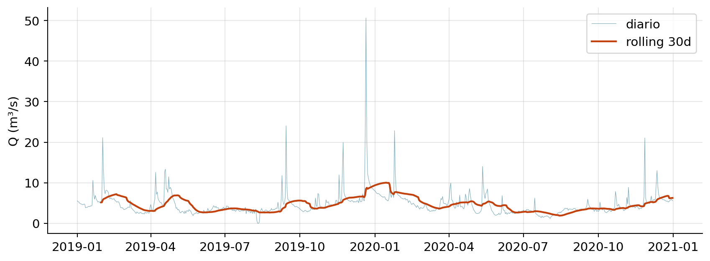
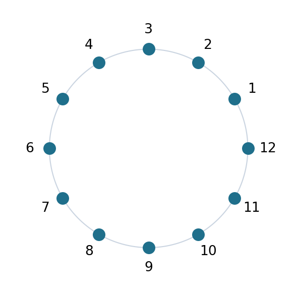
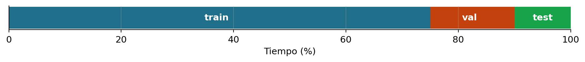
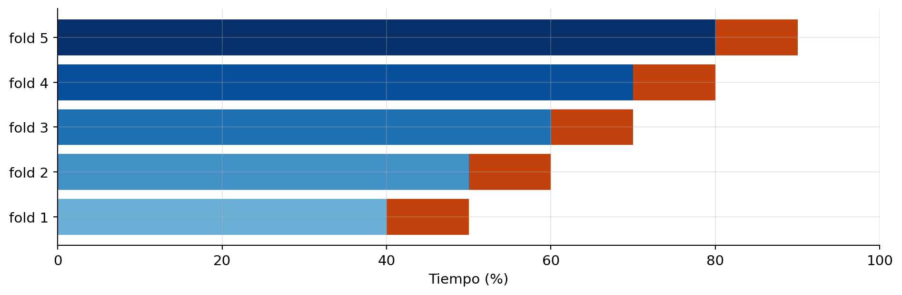
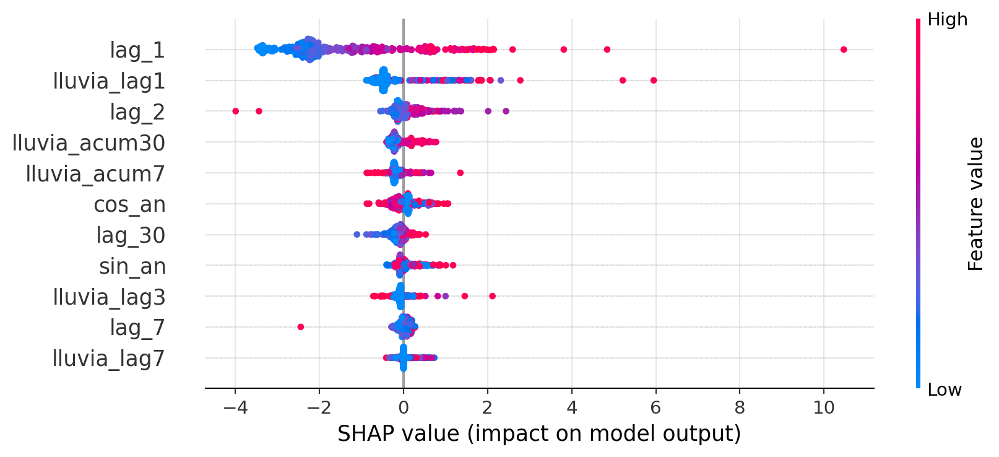
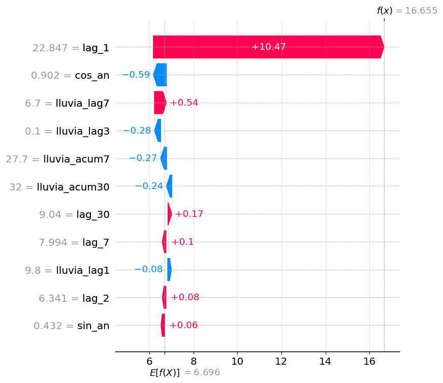
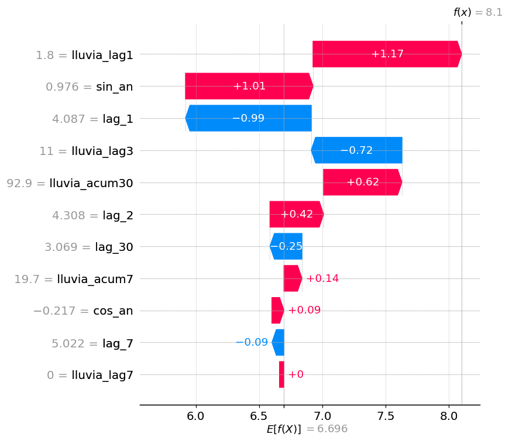
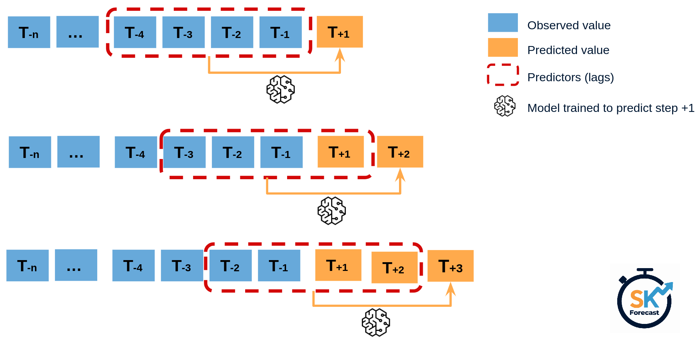
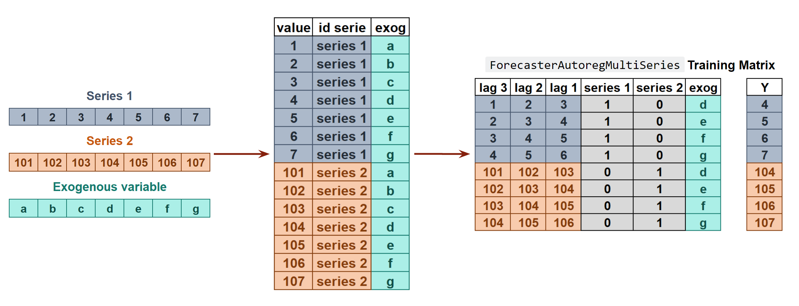

y lag_1 lag_2 lag_3 lag_7 lag_30
fecha
2018-01-31 3.677380 3.635716 3.845041 3.800088 3.697628 4.552541
2018-02-01 3.365625 3.677380 3.635716 3.845041 3.663891 4.268376
2018-02-02 3.426751 3.365625 3.677380 3.635716 4.147539 4.170236
2018-02-03 3.370450 3.426751 3.365625 3.677380 4.340498 3.842428
2018-02-04 3.538293 3.370450 3.426751 3.365625 3.800088 3.763615Sesión 3 — Machine Learning clásico y evaluación
Curso de Series Temporales con Python
Alberto Torres · Komorebi AI
mayo 2026
Bienvenida
Hoy: convertir series temporales en problemas supervisados, aplicar Random Forest / XGBoost / LightGBM con scikit-learn/skforecast, y evaluar calidad de los modelos.
Índice
- De serie a supervisado — sliding window, feature engineering — 45 min
- Modelos clásicos de ML — Ridge, RF, XGBoost, LightGBM — 45 min
- Selección y evaluación — splits, métricas genéricas e hidrológicas, SHAP/permutation — 60 min
- Predicciones a futuro — multi-paso, intervalos — 30 min
Bloque 1 · De serie a problema supervisado
El truco fundamental
ML clásico necesita pares \((X, y)\). Con una serie \(\{y_t\}\) los construimos con una ventana deslizante:
| \(X\) (features) | \(y\) (target) |
|---|---|
| \((y_{t-1}, y_{t-2}, \ldots, y_{t-p})\) | \(y_t\) |
Tipos de features para series temporales
1. Autoregresivas (lags y diferencias)
lag_1,lag_7,lag_30;diff_1 = y_t - y_{t-1}.
2. Estadísticos móviles (rolling)
rolling_mean_7,rolling_std_30,rolling_max_90…
3. Calendario (cíclicas)
- Mes, día del año, día de la semana, hora, año hidrológico.
- Codificación: entero o par de Fourier \(\sin/\cos(2\pi t/s)\) → ver más adelante.
4. Exógenas
- Lluvia retardada, ET₀, índices climáticos (NAO).
Rolling features — ejemplo
y media_7 max_30 std_30
fecha
2020-12-27 5.41 5.48 13.02 1.69
2020-12-28 5.69 5.47 13.02 1.69
2020-12-29 5.80 5.50 13.02 1.68
2020-12-30 5.85 5.55 13.02 1.67
2020-12-31 5.55 5.57 13.02 1.66
Codificación cíclica (Fourier)
Problema: mes=12 (dic) y mes=1 (ene) son adyacentes en el ciclo anual, pero el modelo los ve a distancia 11.
Solución: proyectar un ciclo de periodo \(s\) sobre el círculo unidad:
\[ \sin\!\left(\tfrac{2\pi t}{s}\right), \quad \cos\!\left(\tfrac{2\pi t}{s}\right) \]
La distancia entre dos puntos \((\sin, \cos)\) refleja la distancia cíclica, no la numérica.

Codificación cíclica: ejemplos
Cualquier variable cíclica se codifica con su par \((\sin, \cos)\) usando el periodo \(s\) apropiado:
| Feature | Periodo \(s\) | Pareja de columnas |
|---|---|---|
| Hora del día | 24 | \(\sin/\cos(2\pi h / 24)\) |
| Día de la semana | 7 | \(\sin/\cos(2\pi d / 7)\) |
| Mes | 12 | \(\sin/\cos(2\pi m / 12)\) |
| Día del año | 365.25 | \(\sin/\cos(2\pi \mathrm{doy} / 365.25)\) |
Las features no cíclicas (año, tendencia) no se codifican así — sólo las que “dan la vuelta”.
Variables exógenas — lluvia retardada
caudal lluvia lluvia_lag1 lluvia_acum1d lluvia_lag3 \
fecha
2020-12-29 5.80 6.5 7.2 7.2 0.0
2020-12-30 5.85 0.2 6.5 6.5 0.0
2020-12-31 5.55 0.0 0.2 0.2 7.2
lluvia_acum3d lluvia_lag7 lluvia_acum7d lluvia_lag14 \
fecha
2020-12-29 7.2 0.0 7.2 6.0
2020-12-30 13.7 0.0 13.7 0.0
2020-12-31 13.9 0.0 13.9 0.7
lluvia_acum14d lluvia_lag30 lluvia_acum30d
fecha
2020-12-29 16.0 2.8 93.8
2020-12-30 16.5 0.0 97.5
2020-12-31 16.7 0.0 97.7 Lluvia acumulada en ventana suele ser más predictiva que la lluvia puntual del día anterior, especialmente en cuencas reguladas.
Conexión con Pastas (Sesión 2)
Lo que acabamos de construir — lags de lluvia + regresión — es un modelo de respuesta a impulsos:
\[ \hat y_t = \beta_0 + \sum_{k=0}^{K} \beta_k \cdot R_{t-k} \]
Los \(\beta_k\) forman la IRF empírica, no paramétrica: un peso por lag.
| Pastas (TFN) | ML con lluvia retardada | |
|---|---|---|
| IRF | Paramétrica (Gamma, ~3 params) | No paramétrica (\(K\) pesos \(\beta_k\)) |
| Regularización | Prior en la forma de la IRF | Ridge / Lasso sobre \(\beta_k\) |
| Muestreo irregular | Nativo (AR(1) continuo) | Requiere rejilla regular |
| No-linealidad | Solo en la convolución (lineal en estímulos) | RF / GBM la capturan |
| Datos necesarios | Pocos | Más a mayor \(K\) |
El pitfall clásico: fuga de información
El feature usa información del futuro que no estará disponible en producción.
Casos típicos:
rolling_mean(window=7, center=True)— ¡ve 3 días al futuro!- Escalador
StandardScaler.fit_transform(X)en el set completo → la media del test contamina el train. df['y_smooth'] = df['y'].rolling(30).mean()y luego usary_smoothcomo feature.- Observaciones en lugar de predicciones
Fuga de información — regla práctica
- Rolling siempre con
center=False. - Escaladores:
fitsólo en train,transformen test. - Si dudas: imagina que estás dentro del día \(t\) — ¿tendrías el dato?
Resumen Bloque 1
- Una serie temporal se convierte en problema supervisado con lags + rolling + calendario + exógenas.
- La elección de features importa más que el modelo (en ML clásico).
- Cuidado con filtrar información del futuro en los datos de entrenamiento.
En el notebook 01 construirás la matriz de features para el caudal del Genil y un baseline persistencia + regresión lineal.
Bloque 2 · Modelos clásicos de ML
Panorama
Linear
Ridge / Lasso
→
Random Forest
→
XGBoost
→
LightGBM
CatBoost
Filosofía común: mismo problema supervisado \(X \to y\), distintos bias-variance tradeoffs y velocidades.
Panorama — comparativa rápida
- Lineal regularizado: bias alto, varianza baja, interpretable.
- Decision Trees: poco bias, potencialmente mucha varianza (riesgo overfitting), interpretables
- Random Forest: baja varianza vía bagging.
- Gradient Boosting (XGB / LGB): aprendizaje secuencial, regularización fina.
Baselines (siempre)
Tres baselines que un modelo debe batir para ser usable:
- Persistencia: \(\hat y_t = y_{t-1}\).
- Persistencia estacional: \(\hat y_t = y_{t-s}\) (en caudal mensual, \(s=12\)).
- Climatología: \(\hat y_t = \overline{y_{\,m(t)}}\), la media histórica del mes.
caudal_m = CAUDAL.resample("MS").mean().dropna()
train = caudal_m.loc[:"2019"]
test = caudal_m.loc["2020":]
persistencia_s = caudal_m.shift(12).loc[test.index]
clim = train.groupby(train.index.month).mean().reindex(test.index.month).values
print(f"Persistencia anual MAE: {abs(test - persistencia_s).mean():.2f}")
print(f"Climatología MAE: {abs(test.values - clim).mean():.2f}")Persistencia anual MAE: 1.30
Climatología MAE: 2.69Regresión lineal regularizada
\[ \min_{\beta} \sum_t (y_t - X_t^\top \beta)^2 + \alpha \|\beta\|_{1,2} \]
- Ridge (\(L_2\)): bueno con muchas features correlacionadas (lags adyacentes).
- Lasso (\(L_1\)): selección automática, descarta features.
- ElasticNet: combinación.
Random Forest
- Bagging de árboles + selección aleatoria de features.
- Pros: robusto, casi sin tuning, da feature importance.
- Contras: no extrapola (predice dentro del rango de entrenamiento).
Pitfall hidrológico: si entrenas con datos donde Q_max = 200 m³/s y luego viene una crecida de 400, RF te dará 200 (clipping implícito). XGBoost también, pero los modelos lineales sí extrapolan.
Gradient Boosting — XGBoost y LightGBM
Construyen árboles secuencialmente, cada uno ajustando los residuos del anterior:
\[ F_m(x) = F_{m-1}(x) + \nu \cdot h_m(x) \]
- XGBoost (2014): estándar de facto en ML competitivo.
- LightGBM (2017): histogram-based, mucho más rápido en datasets grandes.
Gradient Boosting — hiperparámetros
Hiperparámetros críticos:
n_estimators+learning_rate(el clásico ratio).max_depth/num_leaves(capacidad).min_child_samples(regularización).subsample,colsample_bytree(estocasticidad).
skforecast — el puente al forecasting
scikit-learn no sabe predecir multi-paso. skforecast lo arregla:
Ventajas:
- API uniforme para cualquier regresor sklearn-like.
- Estrategias multi-paso (recursive, direct, MIMO).
- Backtesting integrado; docs en español (cienciadedatos.net).
Resumen Bloque 2
- Ridge como baseline serio.
- RF y boosting ganan cuando hay interacciones no lineales o eventos extremos.
skforecastconvierte regresores sklearn en forecasters multi-paso.
Bloque 3 · Selección de modelo y evaluación
El error #1 — train/test aleatorio
Con datos i.i.d. es lo correcto. Con series temporales rompe causalidad: el modelo ve futuro durante el entrenamiento.
Si un alumno te dice que su modelo de caudal tiene NSE = 0.95 con CV aleatorio, comprueba siempre que el split es temporal.
Split temporal simple
fig, ax = plt.subplots(figsize=(10, 1.2))
ax.barh(0, 75, color="#1f6f8b"); ax.text(37, 0, "train", color="white", ha="center", va="center", fontsize=11, fontweight="bold")
ax.barh(0, 15, left=75, color="#c2410c"); ax.text(82, 0, "val", color="white", ha="center", va="center", fontsize=11, fontweight="bold")
ax.barh(0, 10, left=90, color="#16a34a"); ax.text(95, 0, "test", color="white", ha="center", va="center", fontsize=11, fontweight="bold")
ax.set_xlim(0, 100); ax.set_yticks([]); ax.set_xlabel("Tiempo (%)")
plt.tight_layout()
- Train: entrenamiento.
- Val: hiperparámetros, early stopping.
- Test: sólo se mira al final, una vez.
TimeSeriesSplit y expanding window
sklearn.model_selection.TimeSeriesSplit:
TimeSeriesSplit — visualización

Backtesting en skforecast
Parámetros críticos:
initial_train_size: tamaño del primer fold.steps: horizonte de cada predicción.refit: ¿reajustamos en cada fold (lento, realista) o sólo al principio (rápido, optimista)?
Pitfalls del split temporal
- Test demasiado corto: una racha de buen tiempo o sequía sesga la métrica. Mínimo 1-2 ciclos estacionales.
- Reajustar parámetros mirando el test: incluso una vez es un sesgo de selección. Si lo haces, llámalo “test final”.
- Lluvia futura como exógena: en backtesting de SARIMAX/ML, ¿usas la lluvia real (información oracular) o un pronóstico realista?
Métricas — ¿qué medimos?
Una vez tenemos split y predicciones \(\hat y_t\) vs observados \(o_t\), las resumimos con números:
- Genéricas: agregadas sobre todo el test — MAE, RMSE, MAPE, WAPE, sMAPE.
- Hidrológicas: diseñadas para capturar picos, estiaje y sesgo de volumen — NSE, KGE, PBIAS.
Una métrica nunca cuenta toda la historia. Reportar al menos 2-3, idealmente con un gráfico predicho vs observado.
Métricas genéricas — absolutas y cuadráticas
\[ \mathrm{MAE} = \tfrac{1}{n} \sum_t |o_t - p_t| \quad \mathrm{MSE} = \tfrac{1}{n} \sum_t (o_t - p_t)^2 \quad \mathrm{RMSE} = \sqrt{\mathrm{MSE}} \]
- MAE: mismas unidades que \(y\), robusto a outliers (mediana del error absoluto).
- MSE / RMSE: penalizan errores grandes cuadráticamente — sensibles a picos.
- RMSE se reporta más que MSE por estar en las mismas unidades que \(y\).
Regla rápida: si importan los picos → RMSE. Si quieres “promedio honesto” → MAE.
Métricas genéricas — porcentuales
\[ \mathrm{MAPE} = \tfrac{100}{n} \sum_t \tfrac{|o_t - p_t|}{|o_t|} \qquad \mathrm{WAPE} = 100 \cdot \tfrac{\sum_t |o_t - p_t|}{\sum_t |o_t|} \]
\[ \mathrm{sMAPE} = \tfrac{100}{n} \sum_t \tfrac{|o_t - p_t|}{(|o_t| + |p_t|)/2} \]
- MAPE: interpretable como “% de error”. Explota si \(o_t \approx 0\) (estiaje).
- WAPE: ponderado por magnitud, más estable que MAPE con ceros o valores pequeños.
- sMAPE: simétrico (no privilegia sobre/infraestimación), menos interpretable.
Para caudales con estiaje severo: usar WAPE o RMSE/MAE; evitar MAPE.
Por qué métricas hidrológicas
Las genéricas son promedios. En hidrología nos importan también aspectos específicos:
- Picos (crecidas) → error en pico, NSE.
- Estiaje (sequía) → log-NSE, BFI.
- Sesgo de volumen (gestión de embalse) → PBIAS, \(\beta\) de KGE.
- Forma de la curva (timing, recesión) → \(r\) y \(\alpha\) de KGE.
Las métricas hidrológicas son descomposiciones o ponderaciones específicas de las genéricas, no las sustituyen.
NSE — Nash-Sutcliffe Efficiency
\[ \mathrm{NSE} = 1 - \frac{\sum_t (o_t - p_t)^2}{\sum_t (o_t - \bar{o})^2} \]
- \(1\) = perfecto.
- \(0\) = igual de bueno que predecir la media.
- \(< 0\) = peor que predecir la media.
Equivale a \(1 - \mathrm{MSE}/\mathrm{Var}(o)\) — el MSE relativo a la varianza observada.
NSE — rangos típicos (Moriasi et al., 2015)
| NSE | Calidad |
|---|---|
| > 0.75 | muy buena |
| 0.65 – 0.75 | buena |
| 0.50 – 0.65 | aceptable |
| < 0.50 | insuficiente |
NSE — la trampa
NSE penaliza enormemente los errores en picos (cuadráticos) y es indulgente con el bias en estiaje.
Ejemplo:
- Modelo A: predice perfecto excepto un pico (200 vs 100 m³/s).
- Modelo B: predice 10% menos en todo, incluido el pico.
A tendrá NSE peor que B aunque conceptualmente sea mejor.
Por eso casi nadie publica solo NSE.
KGE — Kling-Gupta Efficiency
\[ \mathrm{KGE} = 1 - \sqrt{(r - 1)^2 + (\alpha - 1)^2 + (\beta - 1)^2} \]
- \(r\) = correlación de Pearson(obs, sim).
- \(\alpha = \sigma_p / \sigma_o\) — ratio de variabilidad.
- \(\beta = \mu_p / \mu_o\) — ratio de sesgo.
KGE — diagnóstico por componentes
Ventaja: descompone el error en tres causas independientes:
- KGE bajo porque \(r\) es bajo → fase mal.
- \(\alpha\) lejos de 1 → amplitud mal.
- \(\beta\) lejos de 1 → bias volumen.
Error en pico y PBIAS
Error en pico: \(\mathrm{Err}_{pico} = \max(p) - \max(o)\)
Importante en gestión de avenidas. Negativo (infraestimación) puede ser catastrófico.
PBIAS (porcentaje de sesgo):
\[ \mathrm{PBIAS} = 100 \cdot \frac{\sum_t (o_t - p_t)}{\sum_t o_t} \]
Negativo = sobreestima. Positivo = infraestima. Crítico para balance hídrico anual.
Interpretabilidad: SHAP
Shapley Additive Explanations — descomposición justa de la predicción en contribuciones por feature.
- Cada predicción \(\hat y_i\) se descompone como \(\phi_0 + \sum_j \phi_{ij}\), donde \(\phi_{ij}\) es la contribución de la feature \(j\) a la predicción \(i\).
- Los pesos \(\phi\) vienen de la teoría de juegos (valor de Shapley): reparto “justo” entre features cooperando.
- Resultado: una matriz
(n_samples, n_features)que permite tanto explicaciones globales (importancia agregada) como locales (predicción concreta).
Modelo de ejemplo — caudal del Genil
import lightgbm as lgb
df = pd.DataFrame({"y": CAUDAL, "lluvia": LLUVIA}).dropna()
for lag in (1, 2, 7, 30):
df[f"lag_{lag}"] = df["y"].shift(lag)
for lag in (1, 3, 7):
df[f"lluvia_lag{lag}"] = df["lluvia"].shift(lag)
df["lluvia_acum7"] = df["lluvia"].rolling(7).sum().shift(1)
df["lluvia_acum30"] = df["lluvia"].rolling(30).sum().shift(1)
df["sin_an"] = np.sin(2 * np.pi * df.index.dayofyear / 365.25)
df["cos_an"] = np.cos(2 * np.pi * df.index.dayofyear / 365.25)
df = df.drop(columns="lluvia").dropna()
train, test = df.loc[:"2020-01-01"], df.loc["2020-01-01":]
X_tr, y_tr = train.drop(columns="y"), train["y"]
X_te, y_te = test.drop(columns="y"), test["y"]
model = lgb.LGBMRegressor(n_estimators=400, learning_rate=0.05,
num_leaves=31, min_child_samples=20, verbose=-1)
model.fit(X_tr, y_tr)
print(f"MAE test: {abs(model.predict(X_te) - y_te).mean():.2f} m³/s")MAE test: 1.00 m³/sSHAP — beeswarm del modelo

Lectura: un punto = un día del test. Color = valor de la feature (rojo alto, azul bajo). Eje x = contribución a \(\hat y\). lag_1 y lluvia_lag1 dominan; valores altos (rojo) elevan la predicción.
SHAP — explicar predicciones concretas
Caso 1 — 26 ene 2020: día tras el pico de crecida (\(y_{t-1}=22.85\)).

Caso 2 — 13 abr 2020: primavera, sin pico reciente.

SHAP — leyendo los waterfalls
- \(E[f(X)] = 6.7\) m³/s es la predicción media del modelo (baseline). Cada feature mueve la predicción \(\pm\) su valor SHAP hasta el \(f(x)\) final.
- Caso 1 (inercia):
lag_1=22.85aporta +10.47 él solo; el resto \(<1\). El modelo arrastra el pico de ayer → \(\hat y = 16.66\). - Caso 2 (varias señales): sin pico reciente, 6 features se reparten el efecto: lluvia (+1.17), estacionalidad de primavera (+1.01), lag_1 bajo (−0.99)… → \(\hat y = 8.1\).
Útil para auditar predicciones individuales: cuando el cliente pregunta “¿por qué predices crecida mañana?”, el waterfall responde feature a feature.
SHAP — para qué sirve
Útil para:
- Validar que el modelo “piensa” lo que esperamos (lag-1, lluvia reciente → caudal alto).
- Detectar features inútiles o tramposas.
- Explicar predicciones individuales (waterfall, force plots) a clientes técnicos no-ML.
SHAP funciona en TODO modelo (
KernelExplaineres lento pero universal), pero es especialmente eficiente en modelos de árbol (TreeExplainer).
Permutation importance
Idea: barajar los valores de una feature entre observaciones y medir cuánto empeora la métrica del modelo. Si empeora mucho → la feature aportaba; si no cambia → es prescindible.
- Agnóstico al modelo (no usa la estructura interna).
- Calculado sobre el test, así que mide impacto en generalización, no en ajuste.
- Sesgo conocido: features correlacionadas se reparten la importancia y todas parecen poco útiles.
Permutation importance — resultado
SHAP vs permutation: el ranking suele coincidir en lo importante, pero discrepan en colas. SHAP es más informativo (signo y magnitud por observación); permutation es más rápido de interpretar para un decisor (una métrica, un número).
Resumen Bloque 3
- Split temporal + backtesting: nunca romper causalidad; evaluar sobre varias ventanas.
- Métricas genéricas (MAE/RMSE/WAPE) + hidrológicas (NSE/KGE/PBIAS/error pico) — reportar varias, nunca una sola.
- SHAP y permutation importance auditan el modelo más allá del número agregado.
- Cuidado con: test corto, MAPE en series con ceros, NSE como única métrica.
Bloque 4 · Predicciones a futuro
El problema
Hasta ahora: predecir \(y_{t+1}\) dado el pasado. Pero a menudo queremos \(y_{t+1}, y_{t+2}, \ldots, y_{t+h}\).
¿Cómo? Cuatro estrategias clásicas, cada una con sus pros y contras.
Estrategia 1 — Recursiva

- Un solo modelo de 1 paso aplicado \(h\) veces, alimentado con su propia predicción.
- Pros: un único modelo. Contras: acumulación de error.
- skforecast:
ForecasterRecursive(default).
Estrategia 2 — Directa

- \(h\) modelos independientes, uno por horizonte.
- Pros: no propaga error. Contras: \(h\) veces más cómputo; predicciones independientes (no suaves entre horizontes).
- skforecast:
ForecasterDirect(n_jobsparaleliza el entrenamiento).
Estrategias 3 y 4 — DirRec y MIMO
DirRec (Direct-Recursive): un modelo por horizonte (como Direct), pero cada uno recibe las predicciones de los modelos anteriores como features adicionales. Híbrido entre direct y recursive.
MIMO (Multiple-Input Multiple-Output): un modelo que predice todo el vector \((\hat y_{t+1}, \ldots, \hat y_{t+h})\) a la vez.
- Captura dependencias entre horizontes y produce trayectorias coherentes.
- Pide modelos con multi-output nativo:
MultiOutputRegressor, redes neuronales (LSTM, GRU). - En skforecast:
ForecasterRnnpara deep learning.
DirRec no está implementado en skforecast — habría que montarlo a mano o usar otra librería.
Comparativa de estrategias
| Estrategia | #modelos | Error acumulado | Coste cómputo | Cuándo elegir |
|---|---|---|---|---|
| Recursive | 1 | Sí | Bajo | \(h\) corto, pocos datos |
| Direct | \(h\) | No | Alto | \(h\) medio (3–30) |
| DirRec | \(h\) | Bajo | Alto | \(h\) medio, no-linealidad |
| MIMO | 1 | No | Medio | \(h\) grande, dependencias entre horizontes |
En skforecast: ForecasterRecursive, ForecasterDirect, ForecasterRnn.
¿Toda estrategia vale con todo modelo?
No. La estrategia depende de qué espera el modelo como salida:
| Modelo | Recursive | Direct | DirRec | MIMO |
|---|---|---|---|---|
| ARIMA / SARIMAX | ✓ | ✗ | ✗ | ✗ |
| ETS / Theta | ✓ | ✗ | ✗ | ✗ |
| Ridge / Lasso | ✓ | ✓ | ✓ | con MultiOutputRegressor |
| RF / XGB / LGBM | ✓ | ✓ | ✓ | con MultiOutputRegressor |
| LSTM / GRU / Transformer | ✓ | ✓ | ✓ | ✓ (nativo) |
Los estadísticos clásicos (ARIMA, ETS) están casados con la estrategia recursiva: su formulación matemática es la que produce las predicciones. Aplicar “directa” sobre un ARIMA rompe la interpretación del modelo. Los modelos ML son agnósticos al horizonte — el target lo defines tú.
Series múltiples — global forecaster

- Un único modelo entrenado sobre muchas series apiladas que comparten dinámica.
- Cada fila: lags de una serie + columnas que identifican qué serie es.
- skforecast:
ForecasterRecursiveMultiSeriesoForecasterDirectMultiVariate.
Series múltiples — pros, contras y casos
- Pros: más datos → mejor generalización; un único modelo a mantener; series nuevas se predicen sin reentrenar.
- Contras: asume dinámica compartida; series muy heterogéneas → peor que un modelo por serie.
Casos típicos:
- Red de pozos en una misma cuenca.
- Estaciones de caudal vecinas que comparten régimen.
- Demanda en varias tiendas con perfil similar.
- Sensores IoT del mismo tipo (mismo equipo, distintas ubicaciones).
Predicción probabilística
En vez de un valor puntual, predecir distribución:
- Quantile regression: predice \(q_{0.05}, q_{0.5}, q_{0.95}\).
- Conformal prediction: intervalos con cobertura garantizada.
- Distribucional: parámetros de una distribución asumida.
En sesión 4 cerramos con un breve recordatorio. Más a fondo: cursos de UQ.
Resumen Bloque 4
- Horizonte corto, pocos datos → recursive; horizonte medio → direct o DirRec.
- Para producción: combinar predicción puntual con intervalos (conformal prediction en
skforecast) — cobertura sin asumir distribución.
Mapa final
Cuándo usar qué (sesión 2 vs 3 vs 4)
| Tienes… | Usa |
|---|---|
| Pocos años, estacionalidad clara, sin covariables | ETS / SARIMA (S2) |
| Muchos años + covariables (lluvia) + interés en picos | RF / XGBoost / LightGBM (S3) |
| Pozos irregulares + lluvia | Pastas (S2) |
| Cuenca compleja, mucha info, foco en picos | LSTM / DL (S4) |
| Necesitas explicación al cliente | SHAP — siempre |
Próximos pasos
Práctica (1h 30min):
01_features_y_baseline.ipynb— construir matriz de features + baseline lineal.02_rf_y_xgboost.ipynb— RF + XGBoost + SHAP.03_backtesting_y_metricas.ipynb— walk-forward + NSE/KGE/error pico.
Mañana: Deep Learning sobre los mismos datos.
¡Gracias!
Dudas y debate
Curso de Series Temporales con Python